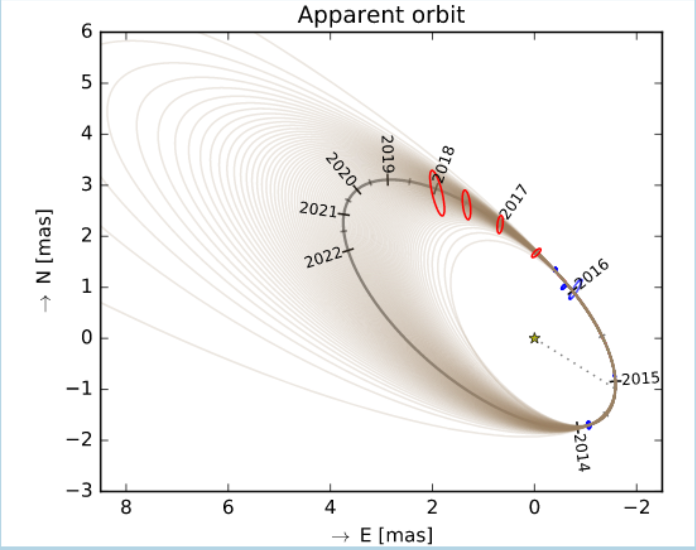

An interferometric view of binary stars


Here are some examples of how I have used interferometry with colleagues to get important results on different classes of stars.
You can also get the PDF of my poster at SPIE 2016, in A4 or in full sizes, while the written article is available here.
Work on precise stellar masses:
- Accurate stellar masses for SB2 components: Interferometric observations for Gaia validation, by Halbwachs, J.-L.; Boffin, H. M. J.; Le Bouquin, J.-B.; et al. 2015, in SF2A-2015: Proceedings of the Annual meeting of the French Society of Astronomy and Astrophysics, pp.377-380
- Masses of the components of SB2s observed with Gaia - II. Masses derived from PIONIER interferometric observations for Gaia validation, by Halbwachs, J.-L.; Boffin, H. M. J.; Le Bouquin, J.-B.; et al. 2016, MNRAS 455, 3303
- The programme ``accurate masses for SB2 components'' , by Halbwachs, J. -L.; Arenou, F.; Boffin, H. M. J. et al., in SF2A-2017: Proceedings of the Annual meeting of the French Society of Astronomy and Astrophysics, held 4-7 July, 2017 in Paris, pp.265-271
- Masses of the components of SB2 binaries observed with Gaia. V. Accurate SB2 orbits for 10 binaries and masses of the components of 5 binaries, by Halbwachs, J. -L.; Kiefer, F.; Lebreton, Y.; Boffin, H. M. J. et al. 2020, MNRAS, in press
Work on symbiotic stars:
- An incisive look at the symbiotic star SS Leporis. Milli-arcsecond imaging with PIONIER/VLTI, by Blind, N., Boffin, H.M.J., Berger, J.-P., et al., 2011, A&A 536, A55
- Roche-lobe filling factor of mass-transferring red giants: the PIONIER view, by Boffin, H.M.J., et al., 2014, A&A 564, A1
- A PIONIER View on Mass-transferring Red Giants, by Boffin, H. M. J.; Blind, N.; Hillen, M.; Berger, J.-P.; Jorissen, A.; Le Bouquin, J.-B., 2014, The ESO Messenger, vol. 156, p. 35-37
- Unequivocal detection of the tidal deformation of a red giant in a binary system via interferometry, by Merc, J. and Boffin, H.M.J., 2024, A&A 692, A218
- Revisiting symbiotic binaries with interferometry. I. The PIONIER archival collection, by Merc, J. and Boffin, H.M.J., 2025, A&A, 695, A61
- Revisiting symbiotic binaries with interferometry. II. New PIONIER data, by Boffin, H.M.J. and Merc, J., 2025, A&A, in press
Work on massive stars:
- The LBV HR Car has a partner, by Boffin, H.M.J. et al., 2016, A&A 593, A90.
- Binarity of the LBV HR Car, by Rivinius, Th.; Boffin, H. M. J.; de Wit, W. J.; Mehner, A.; Martayan, Ch.; Guieu, S.; Le Bouquin, J.-B. 2015, in New windows on massive stars: asteroseismology, interferometry, and spectropolarimetry, Proceedings of the International Astronomical Union, IAU Symposium, Volume 307, pp. 295-296
For application to the visible, see: